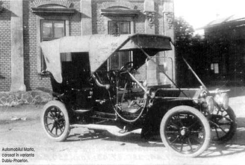
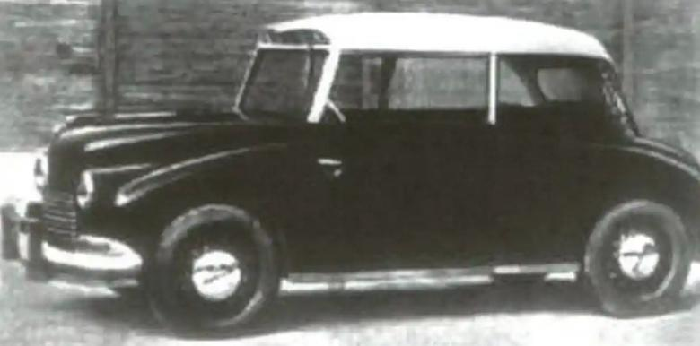

Primul automobil
Cu toate că mulți români ar susține că primul automobil românesc ar fi Dacia,
e de știut că Uzina de Automobile din Pitești a fost fondată abia în anul 1966. Istoria mașinilor
de pe plaiurile autohtone, de fapt, se concentrează în partea de vest a țării. Primul automobil fabricat
pe teritoriul României de azi a fost Marta, în Austro-Ungaria, la Arad,
în anul 1909. S-au produs peste 150 de automobile pe an. Erau similare celor din Germania, cu transmisie prin lanț și cu o putere în jur de 30 CP.
Primul automobil românesc modern, fabricat la uzinele Malaxa din Reșița (unde se fabricau drezine feroviare din 1928)
fusese desenat de inginerul Petre Carp și era prevăzut cu un motor cu trei cilindri, răcit cu aer, care la 30 CP atingea
120 km/ora, cu șase pasageri, cu un consum de 11 litri la 100 km.
Din 1990, câțiva producători auto străini, de exemplu Mercedes-Benz, Audi, Volvo, Hyundai, Toyota și Peugeot și-au planificat
să-și deschidă fabrici în România.
Cum a luat nastere Marta
În anul 1908 s-a înființat la Arad o fabrică de automobile, numită MARTA (Magyar Automobil Részvény Társaság Arad). Firma franceză Westinghouse, din Le Havre, filială a Firmei Westinghouse din SUA, a construit fabrica pe un teren pus la dispoziție de Primăria Arad. Aici se fabricau motoare pentru utilaje feroviare, autobuze, camioane și din 1910 autoturisme în mai multe forme de caroserie, printre care si modelul "Márta". Motoarele erau de 4 cilindri, de 20 CP, 30 CP și 40 CP.
Până în anul 1912 s-au fabricat 150 de autoturisme, în același an Westinghouse intră în faliment, iar fabrica este preluată de Austro Daimler. După preluare, se fabrică mașini Austro Daimler în licență, tot cu numele de Marta. Mai ales Marta Taxi se bucură de un succes deosebit, mașină cu patru cilindri, 2.500 cmc, cu o putere de 18 sau 22 CP se exportă în toată Europa Centrală. În Arad în anul 1936 mai circula un astfel de Marta, care avea peste un milion de kilometri parcurși!
În anul 1926 se desființează fabrica, se demontează utilajele, se transportă la Brașov, unde se înființează Intreprinderea Aeronautica Romana (IAR).

Malaxa 1C-primul automobil 100% romanesc
Malaxa a fost un autoturism românesc construit în 1945 la Reșița în fabricile industriașului român Nicolae Malaxa, al cărui nume îl poartă. Proiectul autoturismului aparține unu grup de ingineri și tehnicieni de la uzinele A.S.A.M., Malaxa din București și IAR din Brașov, conduși de ing. Petre Carp.
Mașina avea un motor cu trei cilindri în stea, cu răcire forțată cu aer, capabil să dezvolte 30 de cai putere (după măsurătorile vremii). Soluția constructivă era "totul în spate", motorul formând un tot cu diferențialul și cutia de viteze.Viteza maximă era de 120 km/h.
Malaxa oferea un nivel înalt de confort și putea transporta până la șase persoane. Caroseria avea o formă aerodinamică, foarte elegantă, cu portbagajul în partea din față, sub capotă, unde se afla și roata de rezervă. Prinderea caroseriei pe șasiu se făcea prin tampoane de cauciuc. Consumul de benzină era de 10 l/100 km.Producția ei a fost oprită când sovieticii au decis să mute linia de asamblare în U.R.S.S., după ce un oficial de la Moscova aflat la Sofia, a fost transportat cu un automobil Malaxa și a rămas impresionat de performanțele acestuia.